Qu'est-ce qu'un produit ?
Un produit, c'est ce que vos conseillères ajoutent au panier de leurs clientes : une référence, un nom et une description dans chaque langue de votre marque, un ou plusieurs prix (un par pays), des catégories, des photos et, si vous le souhaitez, un stock.
Tout se règle dans la fiche produit, organisée en onglets. Les prix, les déclinaisons (tailles, couleurs…) et les stocks ont leur propre page dans ce guide : Prix, prix par rôle et taxes, Catégories, attributs et déclinaisons et Les stocks.
L'espace marque parle de « Vendeur » là où ce guide dit conseillère, et de « Client » pour la cliente. Les libellés d'écran sont cités tels quels, entre guillemets ou en gras.
La liste des produits
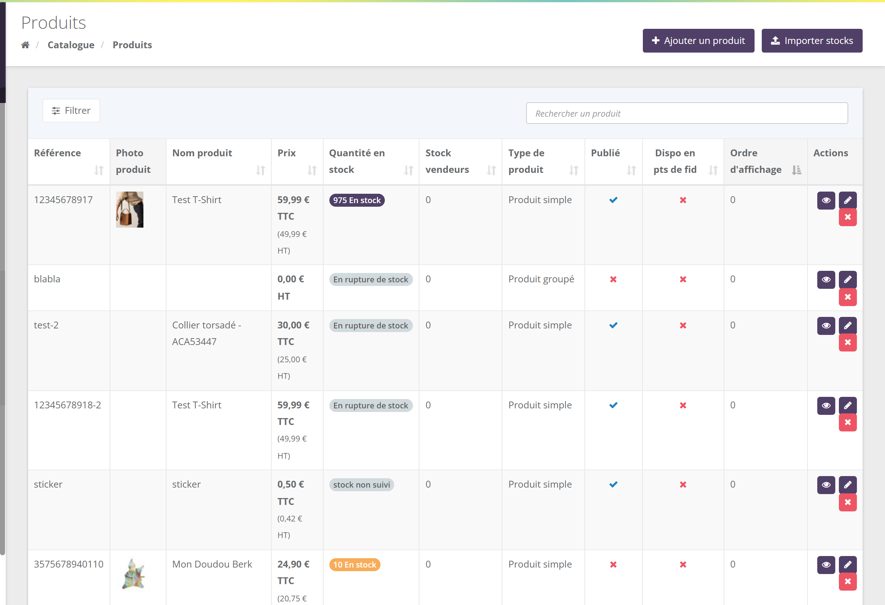
En haut à droite, deux boutons : Ajouter un produit (voir Créer un produit) et Importer stocks (mise à jour des stocks par fichier CSV, détaillée dans Les stocks).
2.1 Les colonnes
| Colonne | Ce qu'elle montre |
|---|---|
| Prix | Le prix du pays par défaut de votre marque, en TTC avec le HT entre parenthèses. |
| Quantité en stock | Un badge : « 12 En stock » (orange si le seuil de stock faible de votre marque est atteint), « En rupture de stock », « En réappro » si une date de réapprovisionnement future est saisie. Un lot dont aucun composant n'est suivi affiche « ∞ En stock ». Rien n'est affiché si le stock n'est pas suivi. |
| Stock vendeurs | Le stock détenu par les conseillères (option « stock chez les vendeurs »). |
| Type de produit, Publié, Dispo en pts de fid | Le type, la disponibilité à la vente et la présence dans le catalogue en points de fidélité. |
| Ordre d'affichage | Le rang du produit dans ses catégories (voir 6.6). |
| Actions | Voir la fiche (œil), la modifier (crayon), la supprimer (croix). |
2.2 Rechercher et filtrer
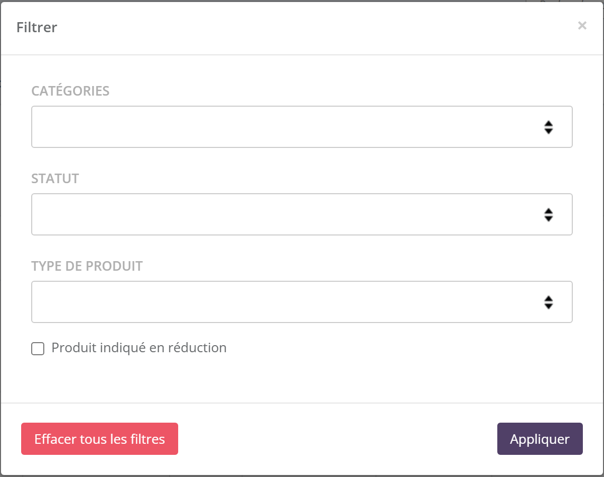
La recherche porte sur les colonnes de la liste, mais aussi sur le code-barres et le SKU des combinaisons : scanner ou taper le SKU d'une taille retrouve le produit.
Le bouton Filtrer combine catégorie, statut (publié ou non), type de produit et la case « Produit indiqué en réduction ».
Les types de produit
Le champ Type de produit propose trois valeurs : « Produit simple », « Produit groupé » et « Kit variables ». Le produit virtuel n'est pas un type mais une case à cocher, possible sur un produit simple.
Un article
Une bague, un pot de crème, un livre. Il peut être décliné en tailles ou couleurs grâce aux attributs.
Un lot fixe
Plusieurs produits vendus ensemble, en quantités fixes : un coffret duo collier + boucles.
Un kit à composer
Un kit dont la conseillère choisit le contenu, composant par composant : « 1 bague au choix ».
Rien à expédier
Une formation, un service, une carte cadeau. La commande qui n'en contient que ça est terminée dès son paiement.
3.1 Le produit groupé (lot)
Le lot n'a pas d'attributs ni de combinaisons. On compose son contenu dans le bloc Produits associés de l'onglet Infos produit (voir 6.5), avec une quantité par produit. Une combinaison précise peut être choisie (la bague en taille 52, coloris or).
Par défaut, le lot n'a pas de stock propre : sa disponibilité se calcule à partir du stock de ses composants, et sa vente déstocke chacun d'eux. La case Stock au produit groupé lui donne au contraire un stock à lui. Le détail et un exemple chiffré sont dans Les stocks.
3.2 Le kit variable
Proposé si l'option est active pour votre marque (c'est le cas de 29 marques actives sur 35). Le kit est découpé en composants : chacun a un nom, une quantité maximale et une liste de produits parmi lesquels la conseillère choisit au moment de la vente (voir 7.1). Le kit n'a pas de stock à lui : ce sont les produits choisis qui sont déstockés.
Votre « Kit nouvelle conseillère » à 149 € contient trois composants : « 100 catalogues » (un seul produit possible), « Présentoir au choix » et « 1 bague au choix ». Léa choisit le présentoir à colliers et la bague en taille 54 : ces deux produits-là sortent du stock.
3.3 Le produit virtuel
Cochez Produit virtuel dans l'onglet Infos produit. Une commande qui ne contient que des produits virtuels passe à « Terminée » dès son paiement (voir Comprendre les commandes). Pensez aussi à décocher Livraison activée si ce bloc est affiché, et à cocher Non inclus dans le calcul des frais de livraison. 13 marques actives sur 35 vendent au moins un produit virtuel.
3.4 Quel type choisir ?
Créer un produit
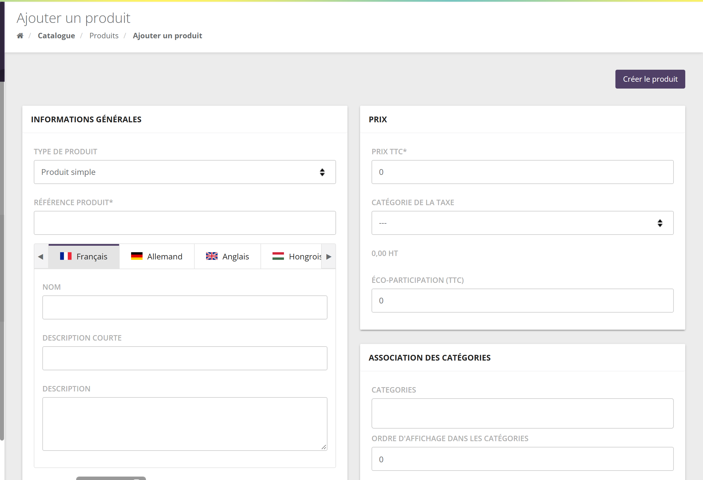
- Choisissez le Type de produit et saisissez la Référence produit (obligatoire, unique dans votre marque).
- Pour chaque langue de votre marque (un onglet par drapeau), saisissez le Nom, la Description courte et la Description.
- Cochez Disponible à la vente ? si le produit doit être commandable tout de suite, ou programmez des dates (voir 6.2).
- Saisissez le Prix TTC et la Catégorie de la taxe : le prix HT se calcule sous le champ. La taxe est obligatoire : sans elle, la création est refusée.
- Choisissez une ou plusieurs catégories. Sans catégorie, le produit est rangé dans la catégorie racine de votre marque.
- Si le bloc Livraison est affiché, renseignez poids et dimensions.
- Cliquez sur Créer le produit : la fiche complète s'ouvre, avec tous ses onglets.
Le prix saisi à la création devient le tarif du pays de la taxe choisie, marqué « Par défaut ». Les autres pays s'ajoutent ensuite dans l'onglet Tarifs. Un lot ou un kit est toujours créé avec la méthode d'inventaire « stock non suivi ».
Les onglets de la fiche
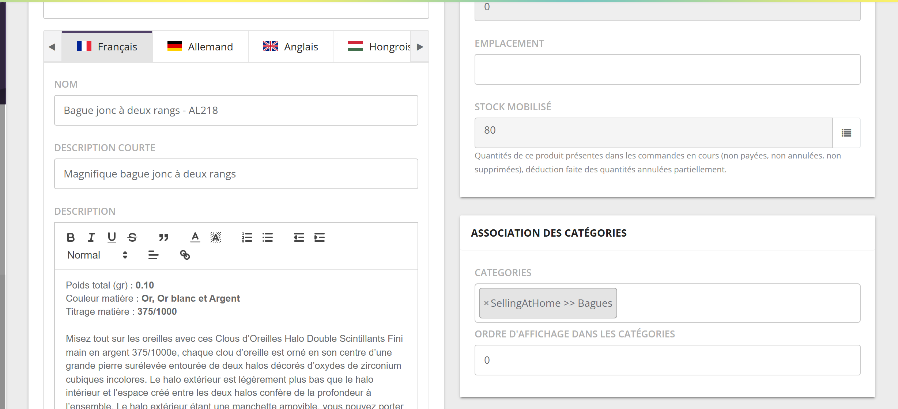
Les onglets affichés dépendent du type de produit et des options de votre marque :
| Onglet | Contenu | Affiché… |
|---|---|---|
| Infos produit | Tout le descriptif, la publication, la livraison, l'inventaire, les catégories, les photos (section 6). | Toujours |
| Champs personnalisés | Les champs propres à votre marque (7.4). | Module champs personnalisés |
| Attributs | Les axes de déclinaison : taille, couleur… (détail) | Produit simple |
| Combinaisons d'attributs | Chaque déclinaison, avec son stock et son SKU (détail). | Produit simple |
| Tarifs | Prix par pays, prix par rôle (détail). | Toujours |
| Historique du stock | Chaque mouvement de stock (détail). | Produit simple, ou lot avec stock propre |
| Conditions d'achat | Qui peut acheter, et combien (7.2). | Produits de votre marque |
| Paramètres d'approvisionnement | Fournisseurs du produit (7.3). | Module approvisionnement, produit simple |
| Composants | Le contenu d'un kit variable (7.1). | Kit variables |
| Stock vendeurs | Les quantités détenues par chaque conseillère (7.4). | Option stock chez les vendeurs |
| Compteurs | Gains et utilisations de compteurs (7.4). | Option compteurs |
Le bouton Enregistrer les modifications n'enregistre que l'onglet Infos produit. Les autres onglets (attributs, combinaisons, tarifs, composants…) s'enregistrent chacun par leur propre bouton, au fil de la saisie.
L'onglet Infos produit
6.1 Informations générales
![Bloc Informations générales : Type de produit, Référence produit, Code-barres, onglets de langue avec Nom, Description courte et Description mise en forme, interrupteur Publication Manuelle, cases Disponible à la vente, Disponible sur la mini-boutique vendeur, Disponible sur les réunions virtuelles, Disponible sur le mini-site hôte, Disponible dans le catalogue en points de fidélité, Produit non commissionné, Produit virtuel, Non inclus dans le calcul des frais de livraison, Afficher le badge réduction](Captures/Catalogue/fiche-general.png)
Type de produit, Référence produit et Code-barres identifient le produit. Le code-barres sert aussi à la recherche dans la liste.
Le Nom, la Description courte et la Description (avec mise en forme : gras, listes, liens) se saisissent langue par langue. Une langue laissée vide n'aura pas de nom traduit.
Selon vos options apparaissent aussi : Points VJ et Points BC, le Compte comptable (si votre comptabilité est paramétrée), le Montant fixe de commission, la référence et l'identifiant externes (marques synchronisées avec un site e-commerce).
6.2 Publication et visibilités
L'interrupteur Publication a deux positions :
- Manuelle : la case Disponible à la vente ? décide seule. Décochée, le produit n'est plus commandable par les conseillères.
- Programmée : vous saisissez Disponible à partir du et/ou Indisponible à partir du. Le produit se publie et se dépublie tout seul à ces dates ; l'écran indique « Actuellement publié » ou « Actuellement non publié ».
Votre collection de Noël doit sortir le 1er novembre à 8 h et disparaître le 31 décembre au soir. Passez la publication en Programmée, saisissez les deux dates, enregistrez : plus besoin d'y penser.
Les autres cases règlent où et comment le produit est vendu. Certaines n'apparaissent que si le canal correspondant est actif pour votre marque.
| Case | Effet |
|---|---|
| Disponible sur la mini-boutique vendeur | Le produit est proposé dans la boutique en ligne de chaque conseillère. Voir Commandes et boutiques. |
| Disponible sur les réunions virtuelles | Le produit est proposé pendant les réunions en visio. |
| Disponible sur le mini-site hôte | Le produit est proposé sur le mini-site de réunion de l'hôtesse. |
| Disponible pour le e-commerce ? | Pour les marques reliées à un site e-commerce : le produit est envoyé vers ce site. |
| Disponible dans le catalogue en points de fidélité ? | Le produit peut être obtenu avec des points de fidélité ; sa valeur en points se saisit dans l'onglet Tarifs. Voir La fidélité. |
| Produit non commissionné | Le produit ne génère pas de commission pour la conseillère. |
| Produit virtuel | Rien à expédier (voir 3.3). |
| Non inclus dans le calcul des frais de livraison | Le produit n'entre pas dans le calcul des frais de port. |
| Afficher le badge réduction | Affiche un badge de réduction sur le produit, entre une Date de début de réduction et une Date de fin de réduction. C'est un affichage : le prix réduit lui-même se règle dans l'onglet Tarifs (prix « Pour tous les clients » daté, voir prix par rôle). |
| Réservable, Uniquement achetable par compteur, Eligible au crédit d'impôt, Achetable par commission, Autoriser la livraison personnalisée ? | Cases liées à des options particulières (collections, compteurs, crédit d'impôt, paiement par commission, adresses multiples). Elles n'apparaissent que si l'option est active. |
6.3 Livraison
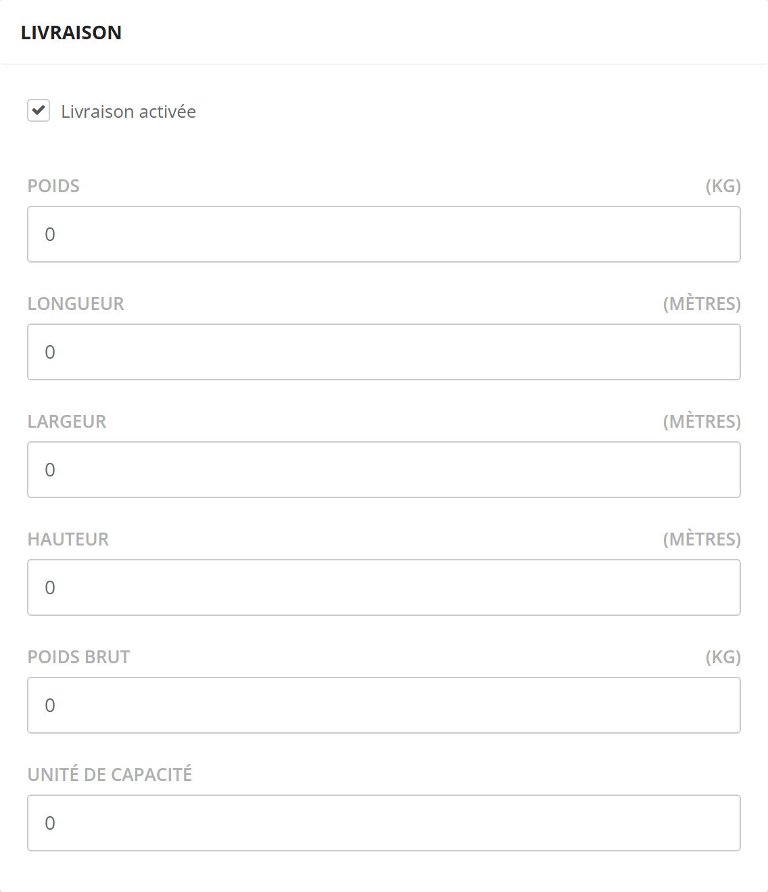
Ce bloc n'apparaît que si votre marque l'a activé. Livraison activée indique que le produit s'expédie ; le Poids, les dimensions et le Poids brut servent aux transporteurs et aux frais de port calculés au poids. Les unités (kg, mètres…) sont celles de votre marque.
Les modes et frais de livraison sont décrits dans l'univers Catalogue et logistique.
6.4 Inventaire
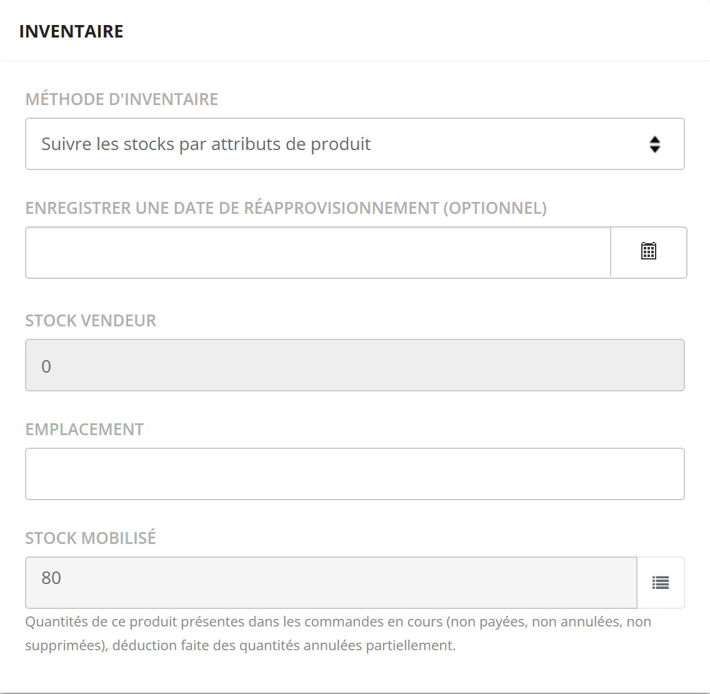
La Méthode d'inventaire dit si le stock est suivi, et à quel niveau. Selon la méthode apparaissent la Quantité en stock, la case Autoriser la rupture de stock, une date de réapprovisionnement, l'Emplacement en entrepôt et le Stock mobilisé.
Tout est expliqué dans Les stocks.
6.5 Produits associés (lot)
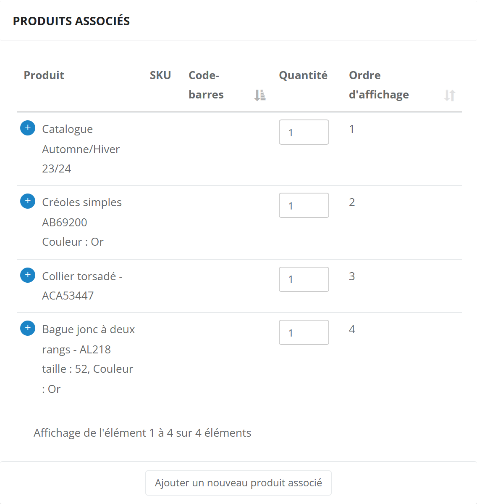
Ce bloc n'apparaît que pour un Produit groupé. Ajouter un nouveau produit associé ouvre un sélecteur de produits ; choisissez la combinaison si le produit est décliné.
La Quantité se modifie directement dans le tableau, et l'ordre d'affichage par glisser-déposer. Ces changements sont enregistrés immédiatement.
Juste sous le type de produit, la case Stock au produit groupé donne au lot un stock propre (voir Les stocks).
6.6 Catégories et contrôle d'accès
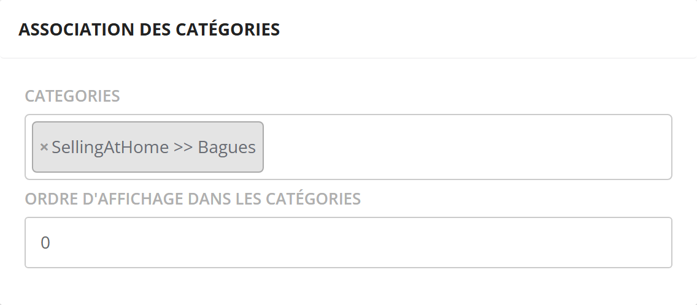
> Bagues, champ Ordre d'affichage dans les catégories" loading="lazy">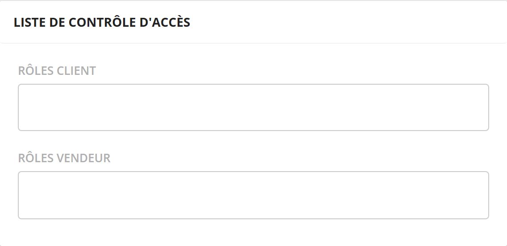
- Categories : un produit peut être rangé dans plusieurs catégories. L'Ordre d'affichage dans les catégories fixe son rang. Les catégories elles-mêmes se gèrent dans Catalogue › Catégories.
- Rôles vendeur : vide, le produit est visible par toutes les conseillères. Rempli, seules les conseillères ayant l'un de ces rôles le voient dans leur catalogue.
- Rôles client : réserve le produit aux clientes ayant l'un des rôles choisis.
Votre présentoir de démonstration ne doit être commandé que par les conseillères : mettez-lui le rôle vendeur adéquat. Chloé, qui a ce rôle, le voit ; une conseillère sans ce rôle ne le voit pas.
6.7 Photos et produits complémentaires
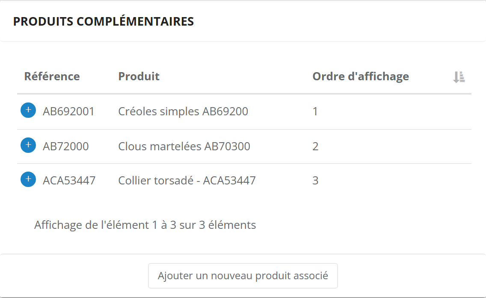
Photos : cliquez ou déposez vos fichiers (jpeg ou png). L'une d'elles est la Photo principale, encadrée en vert. Un nombre maximal de photos s'applique ; au-delà, un message vous l'indique.
Produits complémentaires : les produits à suggérer avec celui-ci (les boucles assorties à la bague). Ils s'ajoutent par le bouton du bloc et s'ordonnent par glisser-déposer.
6.8 Informations complémentaires et SKU
- Le bloc Informations complémentaires (et les blocs de groupes de champs) affiche les champs propres à votre marque, quand ils existent.
- Le champ SKU du produit n'est affiché que si l'option correspondante est activée pour votre marque. Les SKU des déclinaisons, eux, se saisissent toujours dans l'onglet Combinaisons d'attributs.
- Pour un kit variable, si votre marque utilise les collections, un bloc « Gestion du module » apparaît. Voir Commandes et boutiques.
Les autres onglets
Les onglets Attributs, Combinaisons d'attributs, Tarifs et Historique du stock ont leur page dédiée (liens dans le tableau des onglets). Voici les autres.
7.1 Composants (kit variable)
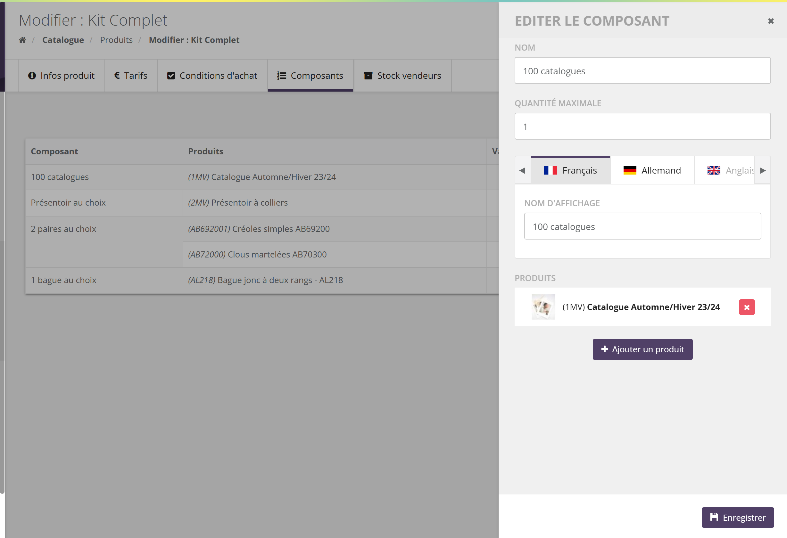
- Cliquez sur Ajouter un composant.
- Donnez un Nom (usage interne) et un Nom d'affichage par langue (ce que voit la conseillère, par exemple « 2 paires au choix »).
- Fixez la Quantité maximale : le nombre d'articles que la conseillère peut prendre dans ce composant.
- Ajouter un produit : choisissez les produits possibles, et pour un produit décliné, ses combinaisons autorisées.
- Enregistrer.
Au moment de la vente, si un produit choisi suit son stock et n'en a plus (sans rupture autorisée), l'ajout du kit est refusé.
7.2 Conditions d'achat
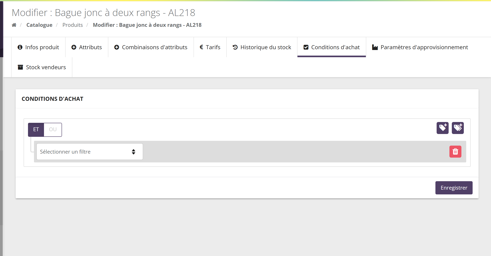
Cet onglet limite qui peut acheter le produit et en quelle quantité : réservé au kit de démarrage, 2 par cliente, un plafond par conseillère et par mois…
Tout est détaillé dans le guide des conditions d'achat.
7.3 Paramètres d'approvisionnement
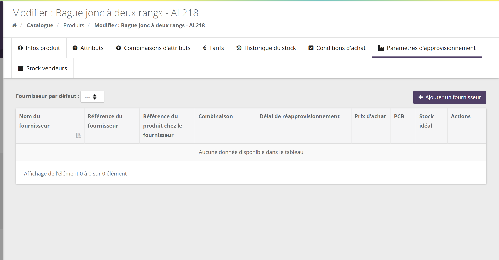
Avec le module d'approvisionnement, vous rattachez ici un ou plusieurs fournisseurs au produit (ou à certaines combinaisons), avec la référence chez le fournisseur, le délai, le prix d'achat et le stock idéal, et choisissez le Fournisseur par défaut. Le fonctionnement complet est décrit dans l'univers Catalogue et logistique.
7.4 Stock vendeurs, champs personnalisés, compteurs
- Stock vendeurs (option stock chez les vendeurs) : un tableau Produit, Référence produit, Vendeur, Quantité, qui montre les pièces détenues par chaque conseillère.
- Champs personnalisés (module correspondant) : les champs propres à votre marque, avec leur bouton Enregistrer.
- Compteurs (option compteurs) : deux tableaux, « Gains compteurs » par rôle et « Utilisation compteurs » (code transaction, rôle, prix TTC, utilisation).
Ces trois onglets ne sont pas actifs sur la marque de démonstration (ou vides) : ils sont décrits d'après l'écran, sans capture.
Dupliquer un produit
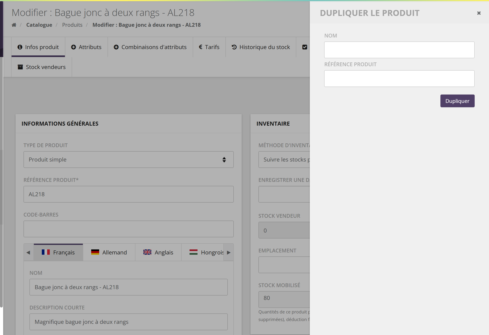
Le bouton Dupliquer le produit, en haut de la fiche, ouvre un panneau : saisissez le Nom et la Référence produit de la copie, puis Dupliquer. Une fois la copie créée, SellingAtHome propose d'ouvrir sa fiche.
La copie reprend le descriptif, les réglages de publication et de visibilité, les photos, les attributs et leurs valeurs, les catégories, le contrôle d'accès, les prix (avec les prix par rôle), les produits complémentaires et les champs personnalisés.
- Les combinaisons ne sont pas copiées : le message de confirmation l'annonce, il faut les recréer (ou les générer) sur la copie.
- Le stock n'est pas copié : la copie démarre sans stock.
- La référence de la copie reçoit le suffixe « -2 » : en saisissant « AL219 », vous obtenez « AL219-2 ». Corrigez-la ensuite dans la fiche si besoin.
La liste de souhaits
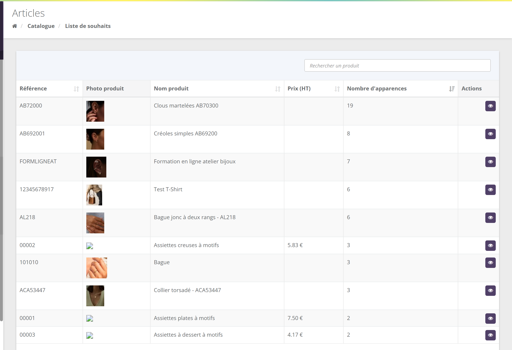
Les clientes peuvent mettre des produits dans leur liste de souhaits (par exemple pendant une réunion, avec la conseillère). Cet écran agrège toutes les listes : pour chaque produit, le Nombre d'apparences est le nombre de listes qui le contiennent. C'est un indicateur d'envie, utile pour choisir une nouveauté à mettre en avant ou un produit à réassortir.
Les « Clous martelés » apparaissent dans 19 listes, loin devant les autres produits : c'est un bon candidat pour une offre « prix réunion » le mois prochain.
La colonne « Prix (HT) » est souvent vide : elle ne reflète pas les tarifs de l'onglet Tarifs.
Points d'attention
- Un produit sans prix pour le pays de la commande n'est pas vendable : la conseillère obtient « Produit non disponible ». Vérifiez l'onglet Tarifs pour chaque pays où vous vendez.
- Changer le type d'un produit n'est pas anodin : un lot ou un kit repasse en « stock non suivi », et l'ajout d'attributs supprime les combinaisons existantes.
- Supprimer une catégorie peut dépublier des produits : un produit qui n'a plus aucune catégorie est rangé dans la catégorie racine et passe en non disponible à la vente (voir Catégories).
- Enregistrer les modifications ne concerne que l'onglet Infos produit.
- La duplication ajoute « -2 » à la référence saisie et ne copie ni combinaisons ni stock.
Questions fréquentes
Une conseillère ne trouve pas mon produit dans son catalogue : pourquoi ?
Vérifiez, dans l'ordre : la case Disponible à la vente (ou les dates de publication programmée), un prix pour son pays dans l'onglet Tarifs, les rôles vendeur du contrôle d'accès, les rôles vendeur de la catégorie, et la publication de la catégorie.
Je ne vois pas l'option « Kit variables » dans le type de produit.
Le type kit variable est une option de votre marque. Demandez son activation à SellingAtHome.
Comment retirer un produit de la vente sans le supprimer ?
Décochez Disponible à la vente ? et enregistrez. Le produit reste dans la liste, avec son historique, et peut être republié à tout moment.
Le produit apparaît en réunion mais pas en visio.
Cochez Disponible sur les réunions virtuelles, et vérifiez que sa catégorie est publiée sur les réunions virtuelles.
Puis-je importer des produits en masse ?
Le bouton Importer stocks de la liste ne met à jour que les stocks. Les produits se créent un par un dans l'espace marque, ou par une synchronisation avec votre site e-commerce si votre marque en a une.